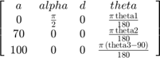
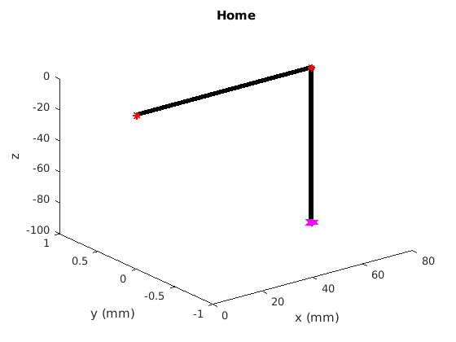
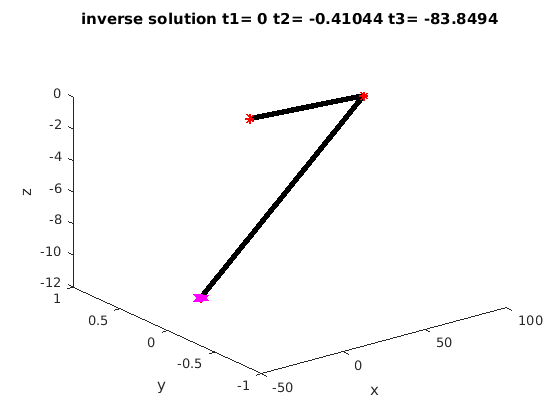

clear all; close all; clc; %define the links l1 = 0; l2 = 70 l3 = 100; syms %go to home syms theta1 theta2 theta3 links(1,:) = [ l1 degtorad(90) 0 degtorad(theta1)]; links(2,:) = [ l2 0 0 degtorad(theta2)]; links(3,:) = [ l3 0 0 degtorad(theta3- 90)]; %get the A and T matrix A = getA(links); T = getT(A);
l2 =
70
%Part 1 %Plot the work space T_fig = double(simplify(subs(T, [ theta1 theta2 theta3 ], [ 0 0 0 ]))); % x = T_fig(1,4,end); % y = T_fig(2,4,end); % z = T_fig(3,4,end); % % for t1 = -90:20:90 % for t2 = -50:20:50 % for t3 = 0-50:20:50 % T_fig = double(simplify(subs(T, [ theta1 theta2 theta3 ], [ t1 t2 t3 ]))); % x = [x,T_fig(1,4,end)]; % y = [y,T_fig(2,4,end)]; % z = [z,T_fig(3,4,end)]; % end % end % end % % %plot the X-Y plane % figure(1); % plot(x,y,'r*') % title('X-Y plane'); % xlabel('x (cm)'); % ylabel('y (cm)'); % % %plot the X-Z plane % figure(2); % plot(x,z,'r*') % title('X-Z plane'); % xlabel('x (mm)'); % ylabel('z (mm)');
%plot the arm %Part 3

%Part 4 %The transforms are: T
T(:,:,1) = [ cos((pi*theta1)/180), 0, sin((pi*theta1)/180), 0] [ sin((pi*theta1)/180), 0, -cos((pi*theta1)/180), 0] [ 0, 1, 0, 0] [ 0, 0, 0, 1] T(:,:,2) = [ cos((pi*theta1)/180)*cos((pi*theta2)/180), -cos((pi*theta1)/180)*sin((pi*theta2)/180), sin((pi*theta1)/180), 70*cos((pi*theta1)/180)*cos((pi*theta2)/180)] [ cos((pi*theta2)/180)*sin((pi*theta1)/180), -sin((pi*theta1)/180)*sin((pi*theta2)/180), -cos((pi*theta1)/180), 70*cos((pi*theta2)/180)*sin((pi*theta1)/180)] [ sin((pi*theta2)/180), cos((pi*theta2)/180), 0, 70*sin((pi*theta2)/180)] [ 0, 0, 0, 1] T(:,:,3) = [ cos((pi*theta1)/180)*cos((pi*theta2)/180)*cos((pi*(theta3 - 90))/180) - cos((pi*theta1)/180)*sin((pi*theta2)/180)*sin((pi*(theta3 - 90))/180), - cos((pi*theta1)/180)*cos((pi*theta2)/180)*sin((pi*(theta3 - 90))/180) - cos((pi*theta1)/180)*sin((pi*theta2)/180)*cos((pi*(theta3 - 90))/180), sin((pi*theta1)/180), 70*cos((pi*theta1)/180)*cos((pi*theta2)/180) + 100*cos((pi*theta1)/180)*cos((pi*theta2)/180)*cos((pi*(theta3 - 90))/180) - 100*cos((pi*theta1)/180)*sin((pi*theta2)/180)*sin((pi*(theta3 - 90))/180)] [ cos((pi*theta2)/180)*sin((pi*theta1)/180)*cos((pi*(theta3 - 90))/180) - sin((pi*theta1)/180)*sin((pi*theta2)/180)*sin((pi*(theta3 - 90))/180), - cos((pi*theta2)/180)*sin((pi*theta1)/180)*sin((pi*(theta3 - 90))/180) - sin((pi*theta1)/180)*sin((pi*theta2)/180)*cos((pi*(theta3 - 90))/180), -cos((pi*theta1)/180), 70*cos((pi*theta2)/180)*sin((pi*theta1)/180) + 100*cos((pi*theta2)/180)*sin((pi*theta1)/180)*cos((pi*(theta3 - 90))/180) - 100*sin((pi*theta1)/180)*sin((pi*theta2)/180)*sin((pi*(theta3 - 90))/180)] [ cos((pi*theta2)/180)*sin((pi*(theta3 - 90))/180) + sin((pi*theta2)/180)*cos((pi*(theta3 - 90))/180), cos((pi*theta2)/180)*cos((pi*(theta3 - 90))/180) - sin((pi*theta2)/180)*sin((pi*(theta3 - 90))/180), 0, 70*sin((pi*theta2)/180) + 100*cos((pi*theta2)/180)*sin((pi*(theta3 - 90))/180) + 100*sin((pi*theta2)/180)*cos((pi*(theta3 - 90))/180)] [ 0, 0, 0, 1]
%Part 5 T_fig = double(simplify(subs(T, [ theta1 theta2 theta3 ], [ 0 0 0 ]))); figure(3); plotArm(T_fig); title('Home') xlabel('x (mm)'); ylabel('y (mm)');
%Part 6
f = [0 0 10]
P_f = [ f 1]'
inv(T_fig(:,:,end))
vector = inv(T_fig(:,:,end))*P_f ;
vector = vector(1:3)
f =
0 0 10
P_f =
0
0
10
1
ans =
0 0 -1 -100
1 0 0 -70
0 -1 0 0
0 0 0 1
vector =
-110
-70
0
%Part 7 % the joints are going to be decoupled and solved geometericly % the elbow "up" config is going to be used, the opposite will also work. %Pose Px = 80; Py = 0; Pz = -100; %set up a1 = l2; a2 = l3; r = (a1*a1 + a2*a2) %Answer t3_IK = -acosd( ( (Px*Px) + (Pz*Pz) - r)/(2*a1*a2)) t2_IK = atan2d(Pz,Px)-atan2d( (a2*sind(t3_IK)), (a1 + a2*cosd(t3_IK))) t1_IK = atan2d(Py,Px) %Plot the arm in the inverse configuration figure(4); T_IK = double(simplify(subs(T, [ theta1 theta2 theta3 ], [ t1_IK t2_IK t3_IK ]))); %get the A and T matrix plotArm(T_IK) title(['inverse solution t1= ' num2str(t1_IK) ' t2= ' num2str(t2_IK) ' t3= ' num2str(t3_IK)])
r =
14900
t3_IK =
-83.8494
t2_IK =
-0.4104
t1_IK =
0
 %Part 8 %calculate the Jacobian j1 = getRevJ( T(1:3,3,1), T(1:3,4,end),T(1:3,4,1)); j2 = getRevJ( T(1:3,3,2), T(1:3,4,end),T(1:3,4,2)); j3 = getRevJ( T(1:3,3,3), T(1:3,4,end),T(1:3,4,3)); J = [j1 j2 j3 ]
J = [ -cos((pi*theta1)/180)*(70*sin((pi*theta2)/180) + 100*cos((pi*theta2)/180)*sin((pi*(theta3 - 90))/180) + 100*sin((pi*theta2)/180)*cos((pi*(theta3 - 90))/180)), -cos((pi*theta1)/180)*(100*cos((pi*theta2)/180)*sin((pi*(theta3 - 90))/180) + 100*sin((pi*theta2)/180)*cos((pi*(theta3 - 90))/180)), 0] [ -sin((pi*theta1)/180)*(70*sin((pi*theta2)/180) + 100*cos((pi*theta2)/180)*sin((pi*(theta3 - 90))/180) + 100*sin((pi*theta2)/180)*cos((pi*(theta3 - 90))/180)), -sin((pi*theta1)/180)*(100*cos((pi*theta2)/180)*sin((pi*(theta3 - 90))/180) + 100*sin((pi*theta2)/180)*cos((pi*(theta3 - 90))/180)), 0] [ cos((pi*theta1)/180)*(70*cos((pi*theta1)/180)*cos((pi*theta2)/180) + 100*cos((pi*theta1)/180)*cos((pi*theta2)/180)*cos((pi*(theta3 - 90))/180) - 100*cos((pi*theta1)/180)*sin((pi*theta2)/180)*sin((pi*(theta3 - 90))/180)) + sin((pi*theta1)/180)*(70*cos((pi*theta2)/180)*sin((pi*theta1)/180) + 100*cos((pi*theta2)/180)*sin((pi*theta1)/180)*cos((pi*(theta3 - 90))/180) - 100*sin((pi*theta1)/180)*sin((pi*theta2)/180)*sin((pi*(theta3 - 90))/180)), cos((pi*theta1)/180)*(100*cos((pi*theta1)/180)*cos((pi*theta2)/180)*cos((pi*(theta3 - 90))/180) - 100*cos((pi*theta1)/180)*sin((pi*theta2)/180)*sin((pi*(theta3 - 90))/180)) + sin((pi*theta1)/180)*(100*cos((pi*theta2)/180)*sin((pi*theta1)/180)*cos((pi*(theta3 - 90))/180) - 100*sin((pi*theta1)/180)*sin((pi*theta2)/180)*sin((pi*(theta3 - 90))/180)), 0] [ sin((pi*theta1)/180), sin((pi*theta1)/180), sin((pi*theta1)/180)] [ -cos((pi*theta1)/180), -cos((pi*theta1)/180), -cos((pi*theta1)/180)] [ 0, 0, 0]
%Part 9 %Find the determinant of the Jacobian of matix, det(J(1:3,:)) %Since the determinant is zero the are no sigularities
ans = 0
%Part10
J_s = simplify(subs(J, [ theta1 theta2 theta3 ], [ 0 0 0 ]))
jV = J_s(1:3,:);
xdot = [ 0 0 10 0 0 0 ]';
pinv(J_s)
thetadot = pinv(J_s)*xdot
J_s =
[ 100, 100, 0]
[ 0, 0, 0]
[ 70, 0, 0]
[ 0, 0, 0]
[ -1, -1, -1]
[ 0, 0, 0]
ans =
[ 0, 0, 1/70, 0, 0, 0]
[ 1/100, 0, -1/70, 0, 0, 0]
[ -1/100, 0, 0, 0, -1, 0]
thetadot =
1/7
-1/7
0